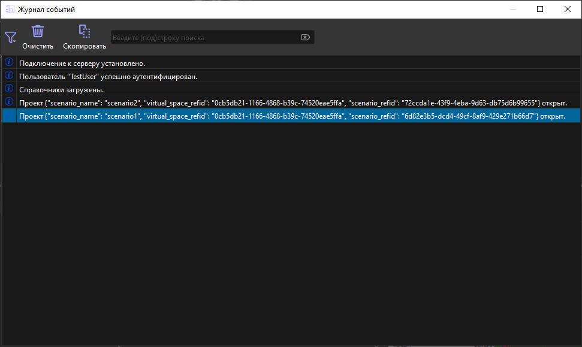
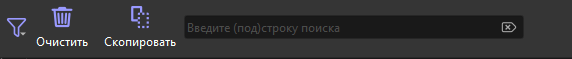
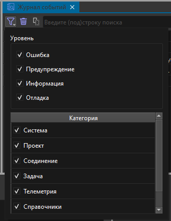
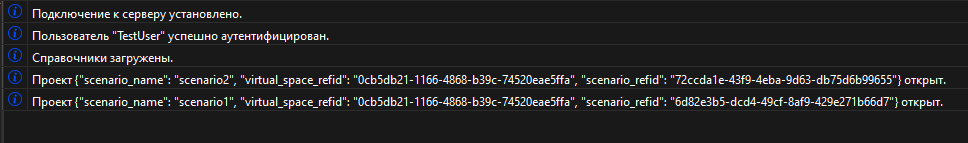

1.3 Графический интерфейс модуля
Модуль Журнал событий предназначен для фиксации и отображения всех событий, происходящих в процессе работы в Редакторе сценариев. Этот инструмент позволяет пользователям отслеживать все изменения, внесенные в сценарий, системные события и другие действия, своевременно получать предупреждения сообщения об ошибках. Журнал событий обеспечивает детализированную историю всех операций, что обеспечивает прозрачность и контроль над процессом создания сценариев.
Модуль Журнал событий реализует следующие функции:
Графический интерфейс главного окна модуля Журнал событий представлен ниже.

Графический интерфейс главного окна модуля Журнал событий содержит:
Внешний вид панели инструментов представлен ниже.

Панель инструментов включает в себя:
Внешний окна выбора критериев фильтрации представлен ниже.

Критерии фильтрации подразделяются на два класса:
Уровни событий:
Категории событий:
Внешний вид таблицы событий представлен ниже.

В таблице событий в каждой строке отображается соответствующая иконка и текстовое описание произошедшего события. Иконки помогают визуально различать различные уровни событий, такие как ошибка, предупреждение, информация или отладка. Это позволяет пользователям быстро и легко идентифицировать тип события и его суть. Текстовое описание предоставляет ключевую информацию о том, что именно произошло.